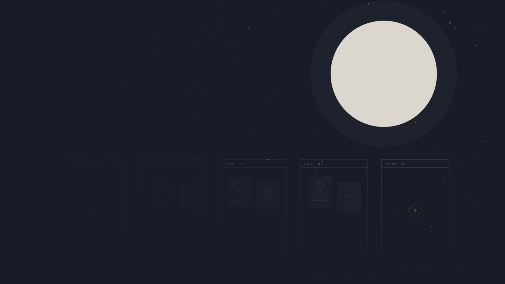

TEXT ADVENTURE / GODOTADV
文字冒险
场景、立绘、分支、存档。小说里被略过的那部分，交给玩家去走。它不追求「自由度」，追求的是「你确实在场」。

TEXT ADVENTURE × CARD GAME
WALK · THEN PLAY
文字冒险负责「你遇见谁」，卡牌负责「你拿什么去换」。
当前是设计归档，不是一个可下载的试玩版。规则、86 张卡、概念图与关系谱都已经在这里；代码与美术仍在路上。
TWO HALVES
文字冒险不解释卡牌，卡牌不解释文字冒险。它们共用人物、地理与历史，但各自承担不同的「选择」。
场景、立绘、分支、存档。小说里被略过的那部分，交给玩家去走。它不追求「自由度」，追求的是「你确实在场」。
随机地图、双信仰、40 张卡组。战区数量、排布与容量由地图决定；战士、法师、射手三类单位，三种距离。防御是可再生的生命，也是可以打空的资源。
THREE FACTIONS
构筑时选一个阵营，只能带该阵营与通用牌。跨阵营的「联动」不存在；跨阵营的「对照」才是这套牌真正好玩的地方。
FOUR WAYS IN
你可以从规则进去，也可以从图、从关系、从一张具体的卡进去。
数据口径：86 张卡（魔法 66 / 天赋 13 / 单位 5 / 觉醒 2）；阵营 新的勇者 59 / 同盟军 18 / 通用 8 / 魔王军 1。卡文以 Game/CardsDesign.md 为准。